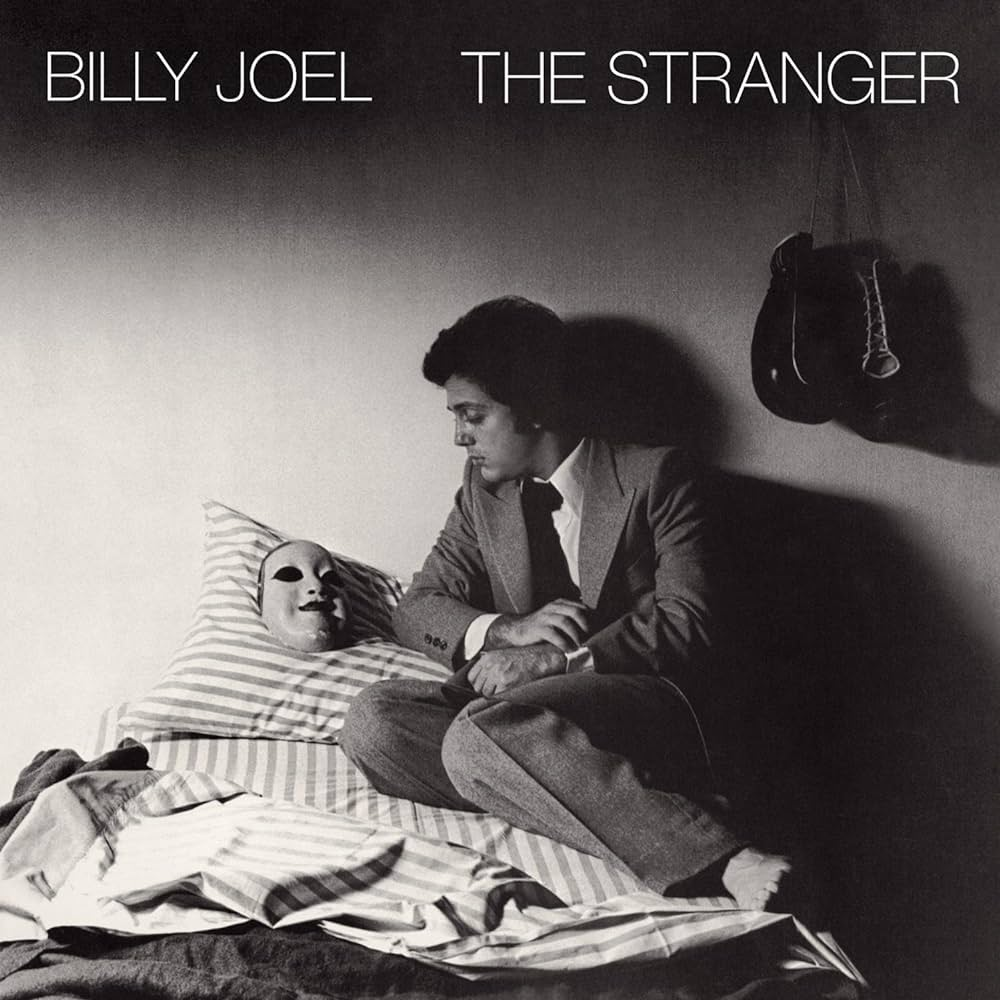
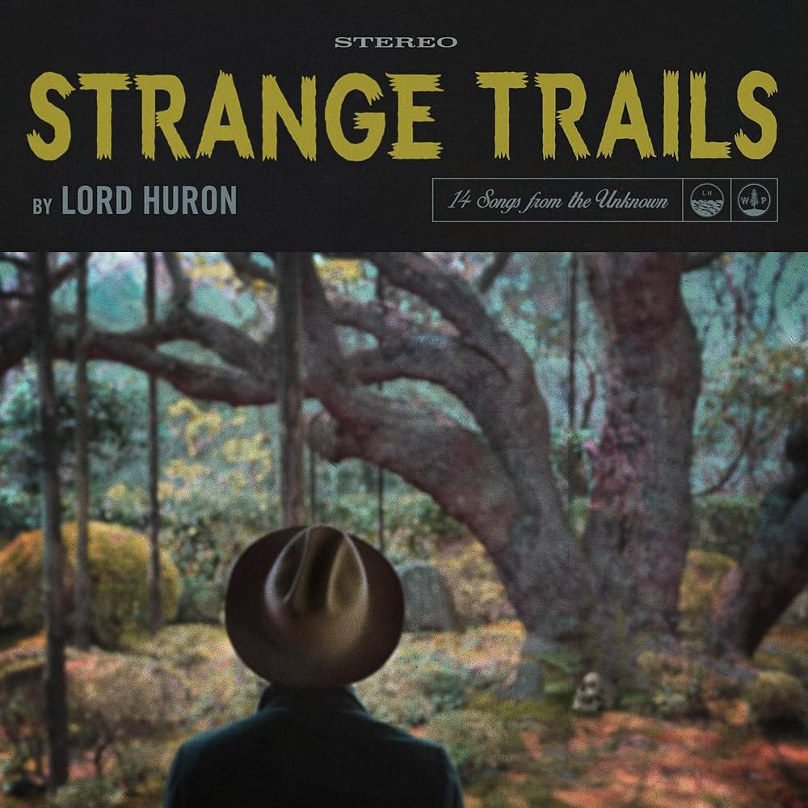
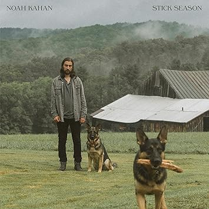
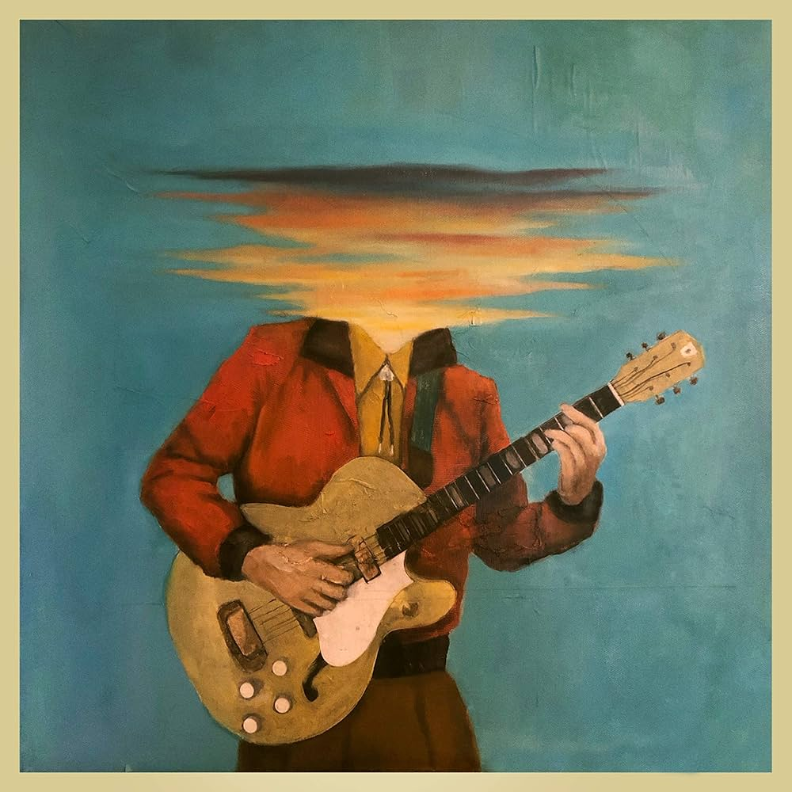
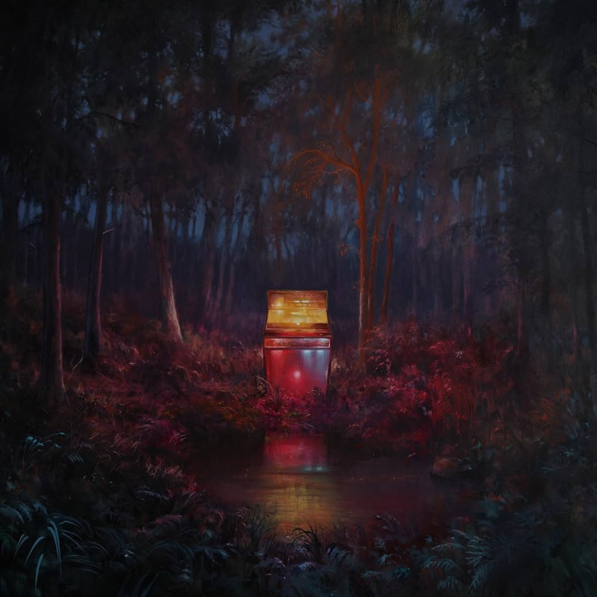

As just a casual listener, The Stranger is one of those albums that’s super easy to get into and just enjoy from start to finish. It’s packed with popular songs that feel both catchy and meaningful, like “Just the Way You Are” and “Movin' Out (Anthony's Song),”. The whole album has this warm, classic vibe, and even the slower songs like “Vienna” feel comforting rather than boring. It's one of those records that I find myself tossing on in the background while I'm relaxing or eating dinner that won't distract too much but offer a comforting vibe.

This is the first of many albums that I have by Lord Huron... There is something about their Alt-Midwestern sound that is so pleasing to the ear. Strange Trails plays like a slow-burning mood piece that favors atmosphere over immediacy. Its standout, “The Night We Met,” delivers a clean emotional hook that explains much of the album’s appeal, but much of the surrounding material leans heavily on reverb-drenched textures and shadowy storytelling that can blur together over time. There’s an undeniable cohesion here—the record feels intentionally sequenced, almost cinematic—but that same consistency occasionally works against it, softening the impact of individual tracks. For listeners willing to sink into its hazy, nocturnal tone, it’s immersive; for others, it may feel more like a vibe than a collection of sharply defined songs.

As a mainstream-leaning critic, Stick Season by Noah Kahan lands squarely in that sweet spot between intimate folk confession and radio-ready polish. Kahan’s writing is sharp and self-aware, packed with specific, small-town imagery that gives songs like “Stick Season” and “Northern Attitude” a lived-in authenticity, even as their hooks aim for wide appeal. The album thrives on its emotional transparency—loneliness, nostalgia, and restlessness are front and center—but occasionally leans a bit too comfortably into its own aesthetic, with similar tempos and textures blending together over the runtime. Still, Kahan’s knack for melody and his unfiltered lyrical voice keep the record engaging, making Stick Season a resonant, if slightly uniform, entry in the modern folk-pop landscape.

From a columnist’s lens, Long Lost by Lord Huron doubles down on the band’s signature sense of myth-making, framing itself like a faded broadcast from another time. There’s a deliberate theatricality here—interludes, narration, and sonic callbacks—that gives the album a cohesive, almost cinematic arc, even if it occasionally borders on self-indulgence. Tracks like “Mine Forever” and “Not Dead Yet” carry that familiar mix of melancholy and grandeur, pairing ghostly atmospheres with melodies that linger. While its commitment to mood and concept can sometimes overshadow individual standout moments, Long Lost ultimately succeeds as an immersive listening experience—less about instant highlights, more about the slow unraveling of its haunted, nostalgic world.

The Cosmic Selector leans even further into the band’s fascination with myth, memory, and alternate realities, presenting itself less like a traditional album and more like a curated transmission from some parallel frequency. The production is richly layered, blending their familiar folk-rock foundation with more experimental, almost psychedelic textures, giving tracks an otherworldly glow. While that ambition adds intrigue, it can also make the record feel diffuse at times, prioritizing concept over immediacy. Still, there’s something compelling about how fully it commits to its aesthetic—less a collection of singles and more a continuous, dreamlike experience that rewards listeners willing to sit with its strange, shifting atmosphere.
Fireworks & Rollerblades is a glossy, emotionally direct debut that leans hard on big vocals and bigger feelings. Boone’s voice is the clear centerpiece—rich, expressive, and built for climactic choruses—especially on tracks like “Beautiful Things,” which channels vulnerability into a soaring, radio-ready payoff. The album balances stripped-back piano moments with more anthemic pop production, though its emotional palette can feel narrowly focused, often circling the same themes of love, fear, and self-doubt. While it doesn’t break much new ground sonically, its sincerity and vocal power give it a strong identity, positioning Boone as a compelling presence in the current pop landscape—even if the songwriting occasionally plays it safe.